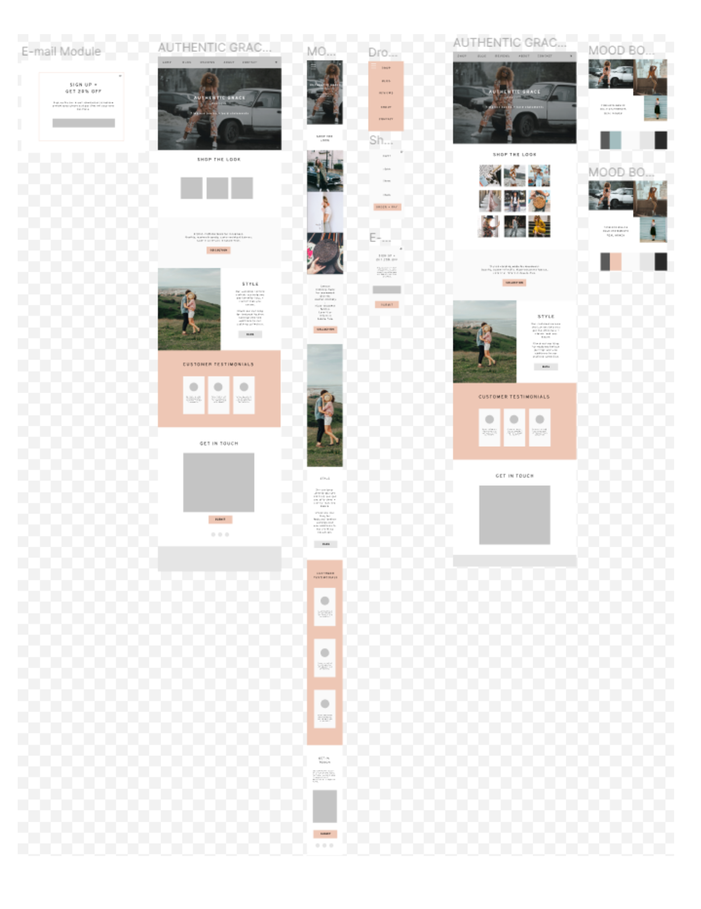

Overview
This was a fun assignment during Cohort 4 of Moms Can Code School (which later became Digital Project Masters). Our team's task was to design and
build an MVP for an online storefront for the fictional owner of a brick-and-mortar women's clothing boutique.
We were given a brief statement of what the client needed to achieve and a description of the buyer.
Andrea Martz independently built this page to tell the story of how our project came to life.
The Team

Andrea Martz
Client Description and Competitors
Client Description

Competitors
- Vici Collection
- Roolee
- Shop Stevie
- Ascot and Hart
- Jean Jail
- Effin Shop
Buyer Persona
From the assignment:
"Erin, 37, is a fit and active woman with two children under the age of 6. She loves to add pieces to
her
wardrobe that won't break the bank and are easily washed. She has a classic style and likes to mix in a few
trendy pieces. At this time, she is a stay-at-home mom, but she still wants to look stylish and not 'get stuck
in the mom.' She loves entertainment TV, and her favorite blogs to follow are Ivory Lane,
9to5chic,
and Hello Fashion."

Business Model Canvas
With our client's need and the buyer persona in mind, we aimed to come up with a page design that would delight
the user and meet the client's needs. To inform this design, we first created a business model canvas.
Customer Journey
We also needed to outline the customer journey.
Wireframe/Mockup
Our mockup was easy to create after we thoroughly understood the client's needs, business model, and customer
journey.

Accessibility Audit
At the time of building the site, we had not yet learned about accessibility on the web. After building the
site,
I independently ran an automated accessibility check on the site using a tool from the Bureau of
Internet
Accessibility's website. As another exercise, I wrote an accessibility audit
report, which you can find here.
Technologies and Tools Used
We found the following tools to be important in our process:
- HTML
- CSS
- JavaScript for the modal
- Git
- GitHub
- VS Code
- Slack
- Figma for designing the page
- Strategyzer for creating the business model canvas
- Lucidchart for laying out the customer journey
I used some additional tools independently after the MVP was built:
- Canva to design the graphics for this page
- Bureau of Internet Accessibility's automated site scanning service